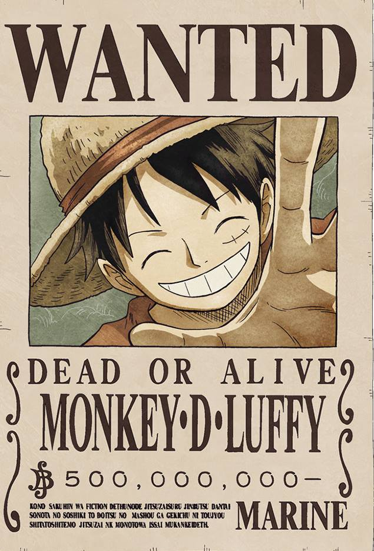
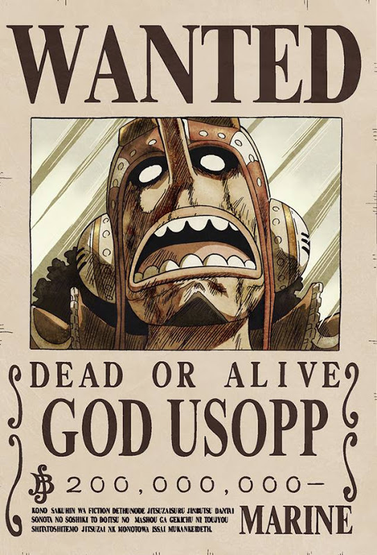
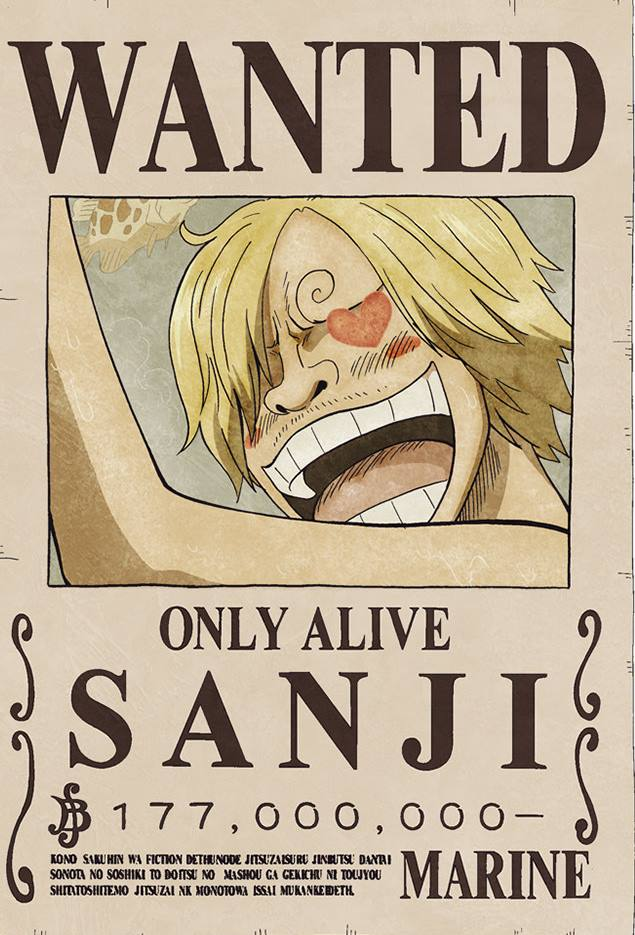
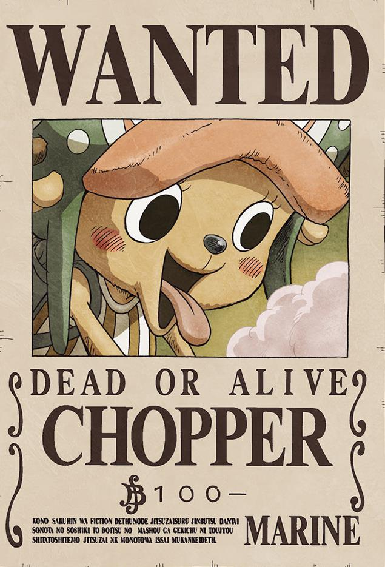
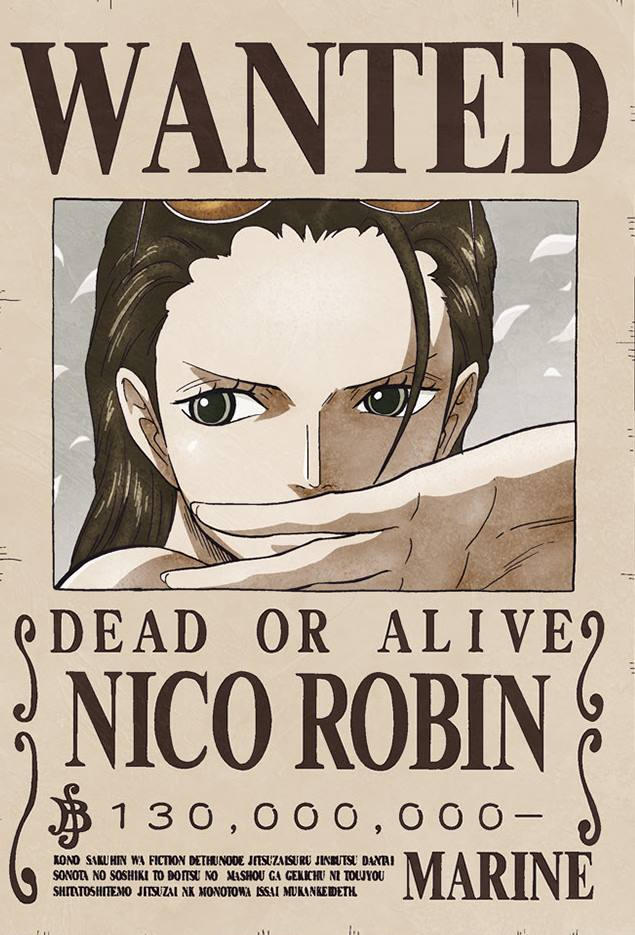

One Piece: Every Crew Member of the Straw Hat Pirates

LUFFY
- Role: Captain
- Crew Debut: Episode 1, Chapter 1
- Devil Fruit: Hito Hito no Mi, Model: Nika (Human-Human Fruit, Model: Nika)
- Haki: Armament, Observation, and Conqueror’s
- Bounty: 3,000,000,000 Berries

Zoro
- Role: Combatant (Swordsman), Second Captain, Righthand man of Luffy
- Crew Debut: Episode 3, Chapter 6
- Devil Fruit: None
- Haki: Armament, Observation, and Conqueror’s
- Bounty: 1,111,000,000 Berries

NAMI
- Role: Navigator
- Crew Debut: Episode 43, Chapter 94
- Devil Fruit: None
- Haki: Unconfirmed
- Bounty: 366,000,000 Berries

Usopp
- Role: Sniper
- Crew Debut: Episode 17, Chapter 41
- Devil Fruit: None
- Haki: Observation
- Bounty: 500,000,000 Berries

Sanji
- Role: Cook
- Crew Debut: Episode 30, Chapter 68
- Devil Fruit: None
- Haki: Armament, and Observation
- Bounty: 1,032,000,000 Berries

chopper
- Role: Doctor
- Crew Debut: Episode 85, Chapter 153
- Devil Fruit: Hito Hito no Mi (Human-Human Fruit)
- Haki: Unconfirmed
- Bounty: 1,000 Berries

nico robin
- Role: Archaeologist
- Crew Debut: Episode 130, Chapter 218
- Devil Fruit: Hana Hana no Mi (Flower-Flower Fruit)
- Haki: Unconfirmed
- Bounty: 930,000,000 Berries

franky
- Role: Shipwright
- Crew Debut: Episode 322, Chapter 437
- Devil Fruit: None
- Haki: Unconfirmed
- Bounty: 394,000,000 Berries

brook
- Role: Musician, Swordsman
- Crew Debut: Musician, Swordsman
- Devil Fruit: Yomi Yomi no Mi (Revive-Revive Fruit)
- Haki: Unconfirmed
- Bounty: 383,000,000 Berries

Jinbei
- Role: Helmsman
- Crew Debut: Episode 980, Chapter 976
- Devil Fruit: None
- Haki: Observation and Armament
- Bounty: 1,100,000,000 Berries